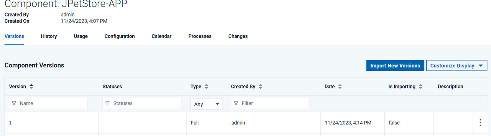
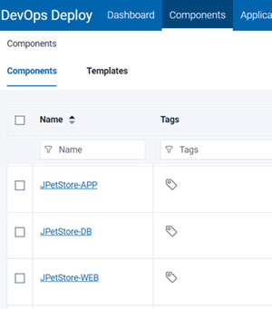

Components are groups of deployable artifacts that make
up an application. Components include runnable files, images, databases,
and configuration instructions.
About this task
These steps describe how to create the components of the sample application. The
JPetStore sample application includes three components:
- The application component includes the logic of the application. This component consists of a
single web archive file that is named JPetStore.war.
- The web component includes the static web content for the application, including images for the
web interface.
- The database component includes the database for the application and scripts that upgrade the
database schema to new versions.
In most cases, you add components by connecting the
Deploy server to the system that hosts the artifacts. The server can import artifacts from many build
systems and source-code management systems. The server can create new versions of the components
automatically as the artifacts change or as new builds run. However, for simplicity, in this lesson
you copy the files for the components to the server and access them from there. For more information
about creating components from artifacts on build systems and source-code management systems, see
Creating components.
Procedure
- Download the artifacts.zip file
by clicking the following link:
- Copy the artifacts.zip file
to the Deploy agent
computer and extract it.
This file contains a folder named shared which contain
separate folders for each of the components; these folders are named
app, web, and
db. Each of these folders contains one or more
folders with names such as 1.0 or
1.1; these folders represent different versions of
the artifacts.
Notes:
- For the tutorial, these folders must be on the same system that
hosts the Deploy agent.
- Note the locations of these folders as you will need the
locations later.
- Ensure that the JARs in the db folder are
compatible with the version of MySQL/MariaDB database installed
on the agent computer.
- Log in to the Deploy server.
- Create the application component:
-
Click the Components tab, and then click Create
Component.
In this window, you specify where the artifacts for the component are.
- In the Name field, type JPetStore-APP.
- In the Source Configuration Type list,
select File System (Versioned).
- In the Base Path field, specify
the location of the app folder on the server,
such as /home/user1/artifacts/shared/app.
-
Make sure that the Copy to CodeStation option is
selected to copy the artifacts from the given source into the Deploy server's CodeStation repository.
-
Under Default Version Type, click Import new component
versions using a single agent, and then select your agent in the Agent for
Version Imports list
- Accept the default values for the other fields on the
page.
- Click Save.
-
Import the versions of the component:
-
Click the Versions tab.
-
Click Import New Versions.
The import process is listed in the Currently
Running Version Imports section. Then the process is finished, the server creates
versions of the component based on the folders in the app folder. In this case,
the server creates a single version of the component that is based on the
app/1.0 folder. Importing versions of small components like this one typically
takes a few seconds. You might need to refresh the page or click the Refresh
link at the bottom of the table to see the new version.
-
Verify that version 1.0 of the component is included in the list of versions, as in the
following figure:

If the version import failed, make sure that the files are available on the agent system and
that the location of these files is correct on the component
Configuration
tab.
The component is available to be used in one or more applications.
- Create the database component:
-
Click the Components tab, and then click Create
Component again.
- Specify the name to be JPetStore-DB.
- In the Source Configuration Type list,
select File System (Versioned).
- In the Base Path field, specify
the location of the db folder on the server,
such as /home/user1/artifacts/shared/db.
- Under Default Version Type, click Import
new component versions using a single agent and then select
your agent in the Agent for Version Imports list
- Accept the default values for the other fields on the
page.
- Click Save.
- Click Versions and then click Import
New Versions.
Now the server shows two versions of the database component.
- Create the web component:
- Click the Components tab and
then click Create Component again.
- Specify the name to be JPetStore-WEB.
- In the Source Configuration Type list,
select File System (Versioned).
- In the Base Path field, specify
the location of the web folder on the server,
such as /home/user1/artifacts/shared/web.
- Under Default Version Type, click Import
new component versions using a single agent and then select
your agent in the Agent for Version Imports list
- Accept the default values for the other fields on the
page.
- Click Save.
- Click Versions and then click Import
New Versions.
Now the server shows two versions of the web component.
- So that you can try updating the components later, delete
the newest versions of the database and web components:
- Click Components and then click
the
JPetStore-DB component.
- Click Versions.
- In the list of versions, in the same row as the version
that is named
1.1, click Delete and
then click OK.You will import this
version again later.
- Similarly, delete version
1.1 of the JPetStore-Web component.
Results
In this lesson, you added components that are based on
files in the file system. In a production scenario, you would connect
the component to a source-code management system such as Subversion
or a build system such as Jenkins.
On the
Components page, you now have
three components, each with one version, as shown in the following
figure:

In a later lesson, you add these components to an application.
What to do next
In addition to files and other artifacts, components also contain component
processes, which describe how to deploy, install, uninstall, update, or run other tasks on a
component. In the next lesson, you create processes that describe how to install the
components.